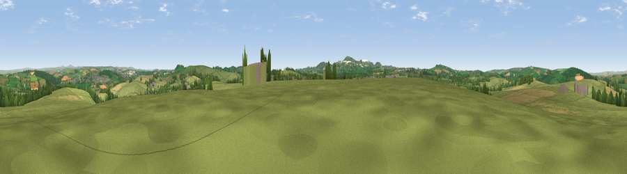

Viewpoint near Lanivet
#17322 in England · top 36% of its area beats it · near LanivetWhere it is
The exact computed spot (SX 02525 64175). Click the marker for map links.
The view, rendered

A 360° render of this exact spot computed from the terrain model, tree cover and land cover — summer colours, afternoon light, calibrated against photographs of famous viewpoints. Real trees, hedges and buildings will differ in detail.
The panorama
Grey silhouette: terrain skyline in each direction (720 bearings, Earth curvature and refraction included). Dashed green: skyline with trees (+15 m) and buildings (+8 m) as obstacles. Blue strip: how far the ground is visible on each bearing.
Where the view opens
Wedge length = distance to the farthest visible ground on that bearing (vegetation-aware). Rings at 10, 25 and 50 km.
What fills the view
71% grassland · 13% cropland · 13% woodland · 3% built-up
Angular shares of the visible panorama (visual magnitude), not map area. Landscape diversity 0.38 (0–1 Shannon).
Key numbers
More beautiful places nearby
The staircase of upgrades: each row has a higher view potential than everything closer. Driving times are estimates from straight-line distance, calibrated against real road routing — check an actual route before setting out.
| Place | Direction | Drive | Score |
|---|---|---|---|
| Viewpoint near Lanivet | NNW · 1 km | ~3 min | 57.1 |
| Viewpoint near Lanivet | ESE · 3 km | ~7 min | 61.5 |
| Viewpoint near Lanivet | E · 4 km | ~10 min | 73.1 |
| St Breock Beacon | NW · 7 km | ~15 min | 74.5 |
| Viewpoint near Stenalees | SSW · 7 km | ~15 min | 88.0 |
| Viewpoint near Crackington Haven | NNE · 32 km | ~49 min | 88.1 |
| Viewpoint near Combe Martin | NNE · 101 km | ~126 min | 88.9 |
| Holdstone Hill | NNE · 102 km | ~127 min | 90.2 |
50.44411, -4.78263 · source: screening · position refined by local search. Computed location — check access rights before visiting.